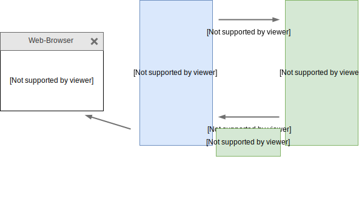
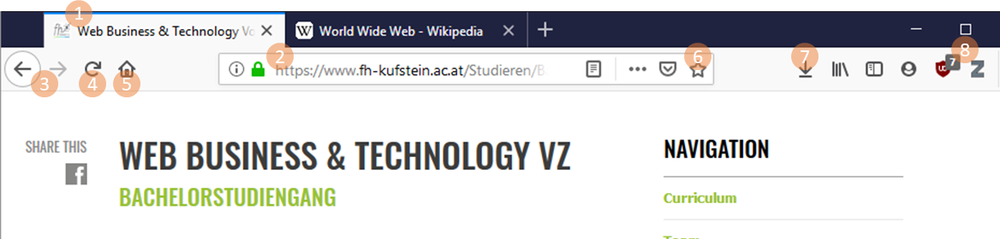

World Wide Web (WWW)
- Das WWW ist ein globales und verteiltes Informationssystem bestehend aus Webseiten und anderen Web-Ressourcen (zB Bilder, Videos, ...)
- Web-Ressourcen werden auf Web-Servern bereitgestellt und sind öffentlich abrufbar
- Web-Ressourcen sind über einen Uniform Resource Locator (URL) eindeutig identifiziert und abrufbar
- Webseiten sind im WWW über Hyperlinks miteinander verknüpft, welche wiederum als URL ausgedrückt werden
- Webseiten können über Web-Browser (auch Web-Clients) geladen und bedient werden
.max.center[ ]
]
URLs: Identifkation und Lokalisierung von Web-Ressourcen
- Eine URL ist eine global eindeutige "Adresse" einer Web-Ressource
- Zusätzlich zur Identifikation gibt eine URL Aufschluss über den Speicherort einer Web-Ressource (Lokalisierung)
Beispiel einer URL:
userinfo host port
┌──┴───┐ ┌──────┴──────┐ ┌┴┐
https://john.doe@www.example.com:123/abc/def/?name=bla&q=abc#top
└─┬─┘ └───────────┬──────────────┘└───┬───┘ └─────┬──────┘ └┬┘
scheme authority path query fragment
Domain Name System (DNS)
- Knoten im Internet sind über IP-Adressen identifiziert (zB 80.93.34.98)
- IP-Adressen sind ähnlich wie Telefonnummern für Menschen schwer einprägsam
- DNS verwaltet Klarnamen zu IP-Adressen
Beispielhafter Auszug aus der Datenbank eines DNS-Servers:
wikipedia.org 185.102.12.2 fh-kufstein.ac.at 85.234.32.2 ... ...

HTTP-Protokoll: Kommunikation zwischen Web-Browser und Web-Server
- Das Hypertext Transfer Protocol (HTTP) ist ein zustandsloses Netzwerkprotokoll zur Übertragung von Daten in Rechnernetzen
- Es wird hauptsächlich eingesetzt, um Webseiten aus dem WWW zu laden
- Die Kommunikation folgt dem Anfrage/Antwort Schema
- Der Client sendet eine Anfrage und bekommt eine Antwort vom Server
.max.center[]
W3C: World Wide Web Conssortium
- Das World Wide Web Consortium (W3C) ist die primäre internationale Standardisierungsorganisation des WWW
-
Gründer und Vorsitzender des W3C ist Tim Berners-Lee
-
Der W3C Standadisierungsprozess gliedert sich in Dokumente mit unterschiedlichem Reifegrad:
- Working Draft (WD)
- Candidate Recommendation (CR)
- Proposed Recommendation (PR)
- W3C Recommendation (REC)
Beispiele für W3C Recommendations sind HTML, XML, CSS, PNG, SVG, DOM
Clientseitige Web-Technologien
Zur Entwicklung von Webseiten bzw. Web-Anwendungen werden standardisierte Web-Technologien genutzt:
- Hypertext Markup Language (HTML): HTML wird genutzt um Inhalte zu strukturieren
- Cascading Stylesheets (CSS): CSS wird genutzt um Inhalte zu formatierung bzw. zu gestalten
- JavaScript: Mit JavaScript wird Verhalten und Dynamik in eine Webseite integriert
Web-Browser I
Ein Web-Browser ist eine Software-Applikation, welche genutzt wird um auf das WWW zuzugreifen. Die populärsten Web-Browser sind Chrome, Firefox, Safari, Internet Explorer, Edge und Opera
Die Marktanteile der Web-Browser sind unterschiedlich verteilt:
.max[ ]
]
Web-Browser II
Alle Web-Browser bieten ähnliche Bedienelemente
.max[]
- Tabs
- Addressleiste
- Vor- und Zurück-Buttons
- Refresh-Button bzw. Stop-Button
- Home-Button
- Bookmarks/Lesezeichen
- Download-Historie
- Extensions